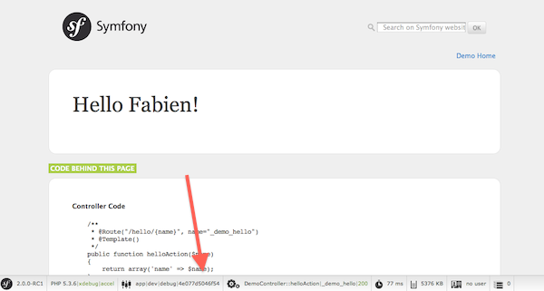

Vue d’ensemble¶
Commencez à utiliser Symfony2 en 10 minutes ! Ce tutoriel vous guidera à travers quelques-uns des concepts les plus importants de Symfony2 et explique comment démarrer rapidement en vous montrant un projet simple.
Si vous avez déjà utilisé un framework web avant, vous devriez vous sentir à l’aise avec Symfony2. Sinon, bienvenue dans une toute nouvelle façon de développer des applications web !
Tip
Vous voulez savoir quand utiliser un framework et pourquoi ? Lisez « Symfony en 5 minutes ».
Télécharger Symfony2¶
Tout d’abord, vérifiez que vous avez installé et configuré un serveur web (comme Apache) avec PHP 5.3.2 ou supérieur.
Vous êtes prêts ? Commencez par télécharger la « Symfony2 Standard Edition », une distribution Symfony préconfigurée pour répondre à la plupart des besoins, et qui contient également du code expliquant comment fonctionne Symfony2 (téléchargez l’archive avec les vendors pour gagner encore plus de temps).
Après avoir décompressé l’archive dans la racine de votre serveur web, vous devriez avoir un répertoire Symfony/ qui ressemble à :
www/ <- votre répertoire racine
Symfony/ <- l'archive décompressée
app/
cache/
config/
logs/
Ressources/
bin/
src/
Acme/
DemoBundle/
Controller/
Resources/
...
vendor/
symfony/
doctrine/
...
web/
app.php
...
Note
Si vous avez téléchargé la Standard Edition sans vendors, lancez simplement la commande suivante pour télécharger toutes les librairies nécessaires :
php bin/vendors install
Vérifier la Configuration¶
Symfony2 est livré avec une interface de test de votre configuration pour vous éviter tous maux de tête dûs à des problèmes de serveur ou à une mauvaise configuration de PHP. Utilisez l’URL suivante pour consulter le diagnostic de votre serveur :
http://localhost/Symfony/web/config.php
S’il y encore des problèmes listés, vous devez les corriger. Vous pouvez également modifier votre configuration en suivant les recommandations données. Lorsque tout est bon, cliquez sur « Bypass configuration and go to the Welcome page » pour afficher votre première « vraie » page Symfony2 :
http://localhost/Symfony/web/app_dev.php/
Symfony2 devrait vous féliciter pour le travail accompli jusqu’à présent !

Comprendre les fondamentaux¶
L’un des principaux objectifs d’un framework est de garantir la séparation des tâches. Cela permet à votre code de rester organisé et à votre application d’évoluer facilement au fil du temps en évitant de mélanger dans le même script les appels de base de données, le code HTML et la logique métier. Pour atteindre cet objectif avec Symfony, vous aurez d’abord besoin d’apprendre quelques notions et connaitre les termes fondamentaux.
Tip
Vous voulez une preuve qu’utiliser un framework est mieux que tout mélanger dans le même script ? Lisez le chapitre « Symfony2 versus PHP pur ».
La distribution est fournie avec des exemples de code que vous pouvez utiliser pour comprendre les concepts de Symfony2. Entrez l’URL suivante pour être salué par Symfony2 (remplacez Fabien par votre prénom) :
http://localhost/Symfony/web/app_dev.php/demo/hello/Fabien
Que se passe t-il ici ? Décortiquons cette URL :
- app_dev.php: C’est un contrôleur frontal. C’est l’unique point d’entrée de votre application et cela prend en charge toutes les requêtes.
- /demo/hello/Fabien: C’est le chemin virtuel vers la ressource à laquelle l’utilisateur veut accéder.
Votre responsabilité en tant que développeur est d’écrire le code qui permet d’associer la requête d’un utilisateur (/demo/hello/Fabien) à la ressource qui y est rattachée (la page HTML Hello Fabien!).
Routing¶
Symfony2 achemine la requête vers le code qui la gère en essayant d’associer l’URL demandée à des masques prédéfinis. Par défaut, ces masques (appelés routes) sont définis dans le fichier de configuration app/config/routing.yml :
# app/config/routing_dev.yml
_welcome:
pattern: /
defaults: { _controller: AcmeDemoBundle:Welcome:index }
_demo:
resource: "@AcmeDemoBundle/Controller/DemoController.php"
type: annotation
prefix: /demo
# ...
Les trois premières lignes (après le commentaire) définissent le code qui sera exécuté quand l’utilisateur demandera la ressource «/» (c’est-à-dire la page d’accueil que vous avez vu tout à l’heure). Suite à cette requête, le contrôleur AcmeDemoBundle:Welcome:index sera exécuté. Dans la section suivante, vous comprendrez exactement ce que cela signifie vraiment.
Tip
La Symfony2 Standard Edition utilise le format YAML pour ses fichiers de configuration, mais Symfony2 supporte également nativement le XML, le PHP, et les annotations. Les différents formats sont compatibles et peuvent être utilisés de façon interchangeable dans une application. Enfin, les performances de votre application ne dépendent pas du format de configuration que vous aurez choisi puisque tout est mis en cache lors de la première requête.
Contrôleurs¶
Un contrôleur est un nom un peu spécial donné à une fonction ou une méthode PHP qui prend en charge les requêtes entrantes et retourne des réponses (souvent du code HTML). Plutôt que d’utiliser des variables globales PHP et des fonctions (comme $_GET ou header()) pour gérer ces messages HTTP, Symfony utilise des objets : Symfony\Component\HttpFoundation\Request et Symfony\Component\HttpFoundation\Response. Le plus simple contrôleur qu’il puisse exister crée une réponse à la main, basée sur la requête :
use Symfony\Component\HttpFoundation\Response;
$name = $request->query->get('name');
return new Response('Hello '.$name, 200, array('Content-Type' => 'text/plain'));
Note
Symfony2 adopte les spécifications HTTP, qui sont les règles qui gouvernent toutes les communications du Web. Lisez le chapitre «Les fondamentaux de Symfony2 et HTTP» pour en savoir plus sur cette partie et la puissance que cela apporte.
Symfony2 choisit le contrôleur en se basant sur la valeur du paramètre _controller du fichier de routing: AcmeDemoBundle:Welcome:index. Cette chaîne de caractères est le nom logique du contrôleur et elle fait référence à la méthode indexAction de la classe Acme\DemoBundle\Controller\WelcomeController :
// src/Acme/DemoBundle/Controller/WelcomeController.php
namespace Acme\DemoBundle\Controller;
use Symfony\Bundle\FrameworkBundle\Controller\Controller;
class WelcomeController extends Controller
{
public function indexAction()
{
return $this->render('AcmeDemoBundle:Welcome:index.html.twig');
}
}
Tip
Vous auriez pu utiliser le nom complet de la classe et de la méthode Acme\DemoBundle\Controller\WelcomeController::indexAction comme valeur du paramètre _controller mais en suivant des conventions simples, le nom logique est plus court et vous octroie plus de flexibilité.
La classe WelcomeController étend la classe Controller qui fournit des raccourcis très pratiques vers des méthodes comme la méthode :method:`Symfony\\Bundle\\FrameworkBundle\\Controller\\Controller::render` qui charge et rend un template (AcmeDemoBundle:Welcome:index.html.twig). La valeur retournée est un objet Response qui contient le contenu rendu. Donc, si le besoin s’en fait sentir, vous pouvez modifier facilement l’objet Response avant de l’envoyer au navigateur :
public function indexAction()
{
$response = $this->render('AcmeDemoBundle:Welcome:index.txt.twig');
$response->headers->set('Content-Type', 'text/plain');
return $response;
}
Peu importe la méthode employée, le but final de votre contrôleur est toujours de rendre un objet Response qui sera retourné à l’utilisateur. Cet objet Response peut être populé par du code HTML, représenter une redirection client ou encore retourner le contenu d’une image JPG avec l’entête Content-Type spécifié comme image/jpg.
Tip
Etendre la classe Controller est facultatif. En fait, un contrôleur peut être une simple fonction PHP ou même une closure. Le chapitre «The Controller» vous dira tout ce que vous voudrez savoir sur les contrôleurs.
Le nom du template, AcmeDemoBundle:Welcome:index.html.twig, est son nom logique et il fait référence au fichier Resources/views/Welcome/index.html.twig du bundle AcmeDemoBundle (situé dans le dossier src/Acme/DemoBundle). La section ci-dessous sur les bundles vous expliquera en quoi cela peut être utile.
Maintenant, jetez à nouveau un oeil au fichier configuration de routing et trouvez la clé _demo:
# app/config/routing_dev.yml
_demo:
resource: "@AcmeDemoBundle/Controller/DemoController.php"
type: annotation
prefix: /demo
Symfony2 peut lire/importer les informations de routing écrites en YAML, XML, PHP ou même grâce aux annotations. Ici, le nom logique du fichier est @AcmeDemoBundle/Controller/DemoController.php et fait référence au fichier src/Acme/DemoBundle/Controller/DemoController.php. Dans ce fichiers, les routes sont définies par des annotations des méthodes action :
// src/Acme/DemoBundle/Controller/DemoController.php
use Sensio\Bundle\FrameworkExtraBundle\Configuration\Route;
use Sensio\Bundle\FrameworkExtraBundle\Configuration\Template;
class DemoController extends Controller
{
/**
* @Route("/hello/{name}", name="_demo_hello")
* @Template()
*/
public function helloAction($name)
{
return array('name' => $name);
}
// ...
}
L’annotation @Route() définit une nouvelle route avec le masque /hello/{name} qui, lorsqu’elle sera reconnue, exécutera la méthode helloAction. Une chaine de caractères entre accolades comme {name} est une variable réservée. Comme vous pouvez le voir, sa valeur peut être récupérée par l’argument $name de la méthode.
Note
Même si les annotations ne sont pas nativement supportées par PHP, vous les verrez très souvent dans Symfony2. C’est une manière très pratique de configurer le comportement du framework et de conserver la configuration près du code.
Si vous regardez de plus près le code du contrôleur, vous verrez qu’au lieu de rendre un template et retourner un objet Response comme nous l’avons vu plus haut, il retourne juste un tableau de paramètres. L’annotation @Template() dit à Symfony de rendre le template pour vous en passant chaque variable du tableau au template. Le nom du template qui est retourné dépend du nom du contrôleur. Donc, dans notre exemple, le template AcmeDemoBundle:Demo:hello.html.twig est retourné (il est situé dans le dossier src/Acme/DemoBundle/Resources/views/Demo/hello.html.twig).
Tip
Les annotations @Route() et @Template() sont plus puissantes que les simples exemples décrits dans ce tutoriel. Apprenez en plus sur «les annotations dans les contrôleurs» dans la documentation officielle.
Templates¶
Le contrôleur rend le template src/Acme/DemoBundle/Resources/views/Demo/hello.html.twig (ou AcmeDemoBundle:Demo:hello.html.twig si vous utilisez le nom logique):
{# src/Acme/DemoBundle/Resources/views/Demo/hello.html.twig #}
{% extends "AcmeDemoBundle::layout.html.twig" %}
{% block title "Hello " ~ name %}
{% block content %}
<h1>Hello {{ name }}!</h1>
{% endblock %}
Par défaut, Symfony2 utilise Twig comme moteur de template mais vous pouvez aussi utiliser les templates traditionnels en PHP si vous préférez. Le prochain chapitre introduira le fonctionnement des templates dans Symfony2.
Bundles¶
Vous vous êtes surement demandé pourquoi le mot bundle est utilisé dans la plupart des noms que nous avons vus précédemment. Tout le code que vous écrivez dans votre application est organisé en bundles. En jargon Symfony2, un bundle est un ensemble structuré de fichiers (PHP, feuilles de styles, javascript, images, ...) qui implémentent une fonctionnalité unique (un blog, un forum, ...) et qui peut être facilement partagé avec d’autres développeurs. Jusqu’à maintenant, nous avons manipulé un seul bundle, AcmeDemoBundle. Vous en saurez plus sur les bundles dans le dernier chapitre de ce tutoriel.
Travailler avec les Environnements¶
Maintenant que vous comprenez mieux le fonctionnement de Symfony2, regardons de plus près le bas de n’importe quelle page affichée par Symfony2; vous devriez voir une petite barre avec le logo Symfony2. On l’appelle la «Web Debug Toolbar» et c’est le meilleur ami du développeur.
Mais ce que vous voyez au premier abord est seulement la partie émergée de l’iceberg. Cliquez sur le nombre hexadécimal pour révéler un nouvel outil Symfony2 très utile : le profiler.

Bien évidemment, vous ne voudrez pas voir ces outils lorsque vous déploierez votre application sur le serveur de production. C’est pourquoi vous trouverez un autre contrôleur dans le répertoire web/ (app.php), qui est optimisé pour l’environnement de production :
http://localhost/Symfony/web/app.php/demo/hello/Fabien
Et si vous utilisez Apache avec le mod_rewrite activé, vous pouvez omettre la partie app.php dans l’URL :
http://localhost/Symfony/web/demo/hello/Fabien
Enfin, sur le serveur de production, vous devriez faire pointer le répertoire racine web vers le répertoire web/ pour sécuriser votre installation et avoir des URLs plus propres :
http://localhost/demo/hello/Fabien
Note
Notez bien que les trois URLs ci-dessus sont fournies à titre d’exemple afin de montrer à quoi ressemble une URL lors que le contrôleur frontal de production est utilisé (avec ou sans mod_rewrite). Si vous les essayez dans la Symfony Standard Edition, vous aurez une erreur 404 car AcmeDemoBundle est activé pour l’environnemenr de dev uniquement, et ses routes sont importées dans app/config/routing_dev.yml.
Pour que votre application répondre plus rapidement, Symfony2 met en cache certains dossiers dans le répertoire app/cache/. En environnement de développement (app_dev.php), le cache est vidé automatiquement lorsque vous apportez une modification au code ou à un fichier de configuration. Mais ce n’est pas le cas en environnement de production (app.php) où les performances prévalent. C’est pourquoi vous devriez toujours utiliser l’environnement de développement pour développer vos applications.
Différents environnements d’une application donnée ne diffèrent que par leur configuration. En fait, une configuration peut hériter d’une autre :
# app/config/config_dev.yml
imports:
- { resource: config.yml }
web_profiler:
toolbar: true
intercept_redirects: false
L’environnement dev (qui charge le fichier de configuration config_dev.yml) importe le fichier global config.yml et le modifie en activant, dans cet exemple, la web debug toolbar.
Le mot de la fin¶
Félicitations ! Vous avez eu un avant gôut du code Symfony2. Ce n’était pas si terrible, n’est-ce pas ? Il y a encore beaucoup à explorer et vous devriez déjà comprendre comment Symfony2 aide à mieux implémenter des sites web rapidement. Si vous avez envie d’en apprendre plus sur Symfony2, plongez dans la section suivante : «La vue».